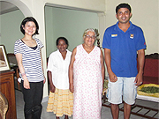
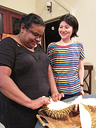
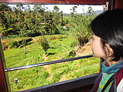
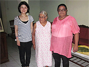
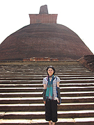
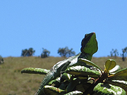

「スリランカを選んだのはインドに旅行に行った後、地図をみていたらたまたま見つけて、色々調べていく地に興味を持ちました。
それから、英語でホームステイができると知り、信頼できそうなwebサイトと対応だったので、参加を決めました。
今回は1週間のホームステイをして、もう1週間で観光をしました。
ホームステイ先が想像以上に居心地の良いお家で、自宅にいるよりゆったりしていました。
お風呂やトイレも清潔でストレスは全くありません。
お食事も全て美味しく自宅の畑でとれたスパイス、ハーブ、お野菜などで作ったカレー、フルーツ、毎回楽しみでした。
１日中、次のお食事の用意に費やされ、とても手がかかっていました。
毎食、スリランカのソウルフード、ライス＆カリーを頂きます。
特においしかったのは、マンゴーカレーです。
また、主食は白米だけでなく、ロティ、ピットゥ、ホッパーなどのバリエーションが豊富です。
カレーを手で食べると、おいしさが増します。
旅行中もスリランカ料理を食べましたが、ステイ先が一番おいしかったです。
マーネル先生の英語レッスンでは、お料理やホワイトボードを使ってスリランカやココナツの説明を図解頂きわかりやすかったです。
最終日に今後の英語の勉強方法についてもアドバイスいただきました。
ソーマ先生の英語レッスンでも楽しくお話しできました。
日本についての説明を求められ自分の知識不足を感じました。
宿題は英語で日記をつけることがあり、数日分チェックいただきました。
スーパーでの野菜説明が楽しかったです。
お二人の先生とスリランカの歴史についてお話を伺えたのも楽しかったです。


低開発村視察は、少し深刻な様子を想像していましたが、皆さんが笑顔で迎えてくださりホッとしました。
線香作りを教えて頂いたり、野菜や米、ゴザについて教えて頂き、勉強になりました。
日本からの援助も役に立っていると聞き、驚きました。
スリランカに行ったみてわかったことは、敬虔な仏教徒がどんなことを示すのか理解が深まりました。
体調もずっと良く肌に合う気がしました。
初のホームステイでホストファミリーには、私がご迷惑をかけたことも多かったと思います。
ですが、日本とは、異なる文化の『スリランカ』への理解が深まりました。
また、今回はきっとスリランカの良いところのみをホームステイ＆観光で見たのだと思います。


マーネル先生には、ステイ後の旅程の相談にのって頂き、お陰様で効率よく観光できました。
スーツケースを預かって頂いたり、観光の後もお食事とベッドをご提供いただいたり心より感謝しております。
旅行前に不安だったのはステイ先が間近に決まることと、自分の英語レベルの判定でしたが、取り越し苦労でした。
ぜひ、来年もまたスリランカへ行きたいです。
お休みが２週間とれれば、今回のような感じがベストと思います。
次はスリーパーダやゴール、サファリなど今回行けなかったところに行ってみたいです。」
